CoReMem：把跨任务记忆的未来价值和使用成本纳入编码 Agent 训练
作者：Peiwen Li、Harshit Verma、Sophia Zhou、Haiwen Wang、Ngoc Bui、Heng Chang、Fei Fei、David van Dijk、Rex Ying。一作主机构为耶鲁大学，合作机构包括清华大学与 Goodvision AI。论文首次提交于2026年11月12日UTC，即北京时间11月13日02:58。论文链接：arXiv:2611.17316。记录日期：2026年11月16日。
论文脚注提供匿名代码入口；本轮跟随该入口后返回401与not_connected，未核验可访问的完整代码、配置及训练产物。下文数值来自26页论文，不代表独立复现。
CoReMem研究的是同一仓库中前后相接的代码任务：上一任务留下的代码和记忆都会影响下一任务。它先测哪些历史片段值得留下，再训练actor在真正受益的步骤采用记忆，而不是把一切历史都交给模型自行消化。
跨任务记忆必须在下一任务尚未到来时写下，但其价值只有在后续任务中才体现；写入、读取本身消耗资源，actor还需要在执行过程中判断何时利用记忆才能省下工作。
1. 背景和问题
1.1 持续演进的仓库改变了记忆的评估单位
编码任务通常被评测为一个独立问题：给定issue、起始代码和工具，Agent提交修复，再由隐藏测试判断是否成功。这个单位适合检查单任务解决能力，却不能回答一个长期协作问题：同一仓库连续修复多个缺陷时，上一轮探索发现的目录结构、测试命令和代码位置，是否能使下一轮少做重复工作。CoReMem把任务链放进一个持续工作区，前一个actor留下什么修改，后一个actor就接着使用什么状态。若早先修复没有成功，这个失败也可能继续影响后续任务，所以历史不是一个可以随意清空的文本缓存。
这个设定中，代码状态和文字记忆分别承担不同责任。代码树已经保存了真实修改，记忆不需要重新叙述所有diff，但可以指出改动位置、相关符号及验证办法。只把记忆看作上一轮总结，会把“代码已经具备的答案”和“下一轮还要重新寻找的信息”混在一起。例如一个函数已被修改，下一轮真正需要的可能只是定位它的路径，以及能快速确认行为的测试命令；完整讲述上次推理过程并不一定有额外价值。论文因此把下一任务的成功率、步骤和token使用作为主要评估单位，而不以摘要相似度或记忆覆盖率作为终点。
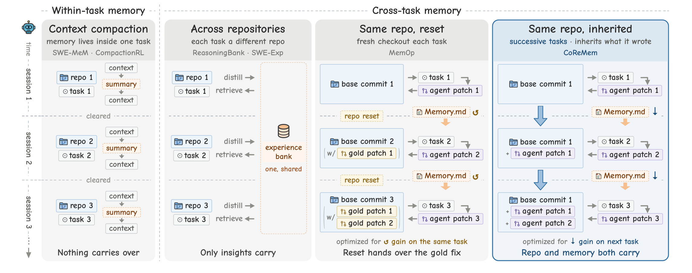
Figure 2从左到右区分四种容易被混称为长期记忆的条件。第一种只压缩同一任务内部的上下文，任务结束后信息清空；第二种在不同仓库的独立任务间传递通用经验；第三种虽在同仓库积累记忆，但每次任务恢复到标准起点，图中还显示先前标准修复会被放入后续基线；第四种才是本文的继承工作区，代码树与记忆随actor实际产出一起延续。箭头旁的估值方向也很关键，前面一些方法在产生记忆的原任务上回放验证，本文则在未来任务上评估。图中展示的是协议差别，不能从框的颜色推断方法优劣；它说明同名的记忆收益可能是在不同状态分布上测得，比较前必须确认后续任务继承的是实际agent修改、标准答案还是独立checkout。对长期编码协作而言，忽略这个条件会把环境提供的额外帮助误算成记忆能力，也会漏掉早期错误沿任务链传播的成本。
1.2 有用的记忆也可能是一笔不划算的开销
论文对现有记忆形式的第一个质疑是计费边界。较长历史能够提供更多线索，却要反复输入；事实抽取、经验检索和指南更新还需要额外模型调用。若只看actor生成的token，某种方案可能显得便宜；将writer与reader的调用一起加入后，收益可能反转。因此作者同时报告actor、记忆模块和总token，并将其与成功率联系起来。这里的“成本内化”不是一个已经包括所有GPU、网络、等待和存储费用的全面生产成本模型，而是让未来任务的行动步骤和会话token成为可观察的代价，并让训练奖励关心这些代价。
这一区分也使“记忆令成功率上升”与“记忆节省了工作”成为两个问题。某个方法可能多花很多token解决更多任务；另一个方法可能减少步骤，却因记忆读取太长增加总token。两者都未必无价值，但只有明确预算才能判断是否适合目标场景。论文希望在不牺牲解决能力的条件下减少未来任务的行动，并避免一种捷径：actor为了少走几步而提早放弃。后面成功优先的奖励正是针对这一点设计，不能把它理解成对每一个token直接计价的最优化。
还有一个较隐蔽的问题是因果归属。读过记忆后actor提到相同函数名，并不能证明该动作由记忆促成。任务描述本来可能就写出了函数名，或者actor前面已经通过检索找到了它。若所有这些动作都得到“善用记忆”的奖励，模型可能学会表面引用而没有减少探索。CoReMem用来源门控排除本轮已经见过的锚点，并借助同一训练组的无记忆运行，排除那些不用记忆也很早就能找到的信息。这只是一个可追溯使用信号，而不是每步对成功的精确因果贡献，论文在门控定义中也保留了这种边界。
1.3 对未来任务估值，不等于在部署时偷看未来
在写入时，下一issue尚未知晓；在研究和训练阶段，作者当然可以拿一条已收集的任务链，运行下一任务来估计历史片段的价值。两者必须区分。论文的策略不是上线后先运行未知未来任务再决定记忆，而是先在训练边界做配对干预，归纳出一套适合编码场景的紧凑写入结构。实际部署时，writer只根据刚结束的轨迹写下位置和检查等字段，不需要未来issue作为输入。若复现时把未来任务文本、隐藏测试或标准修复传给writer，就改变了本文要解决的设定。
同样重要的是保持配对实验的初始代码状态一致。带记忆和无记忆的下一任务都应从上一任务结束后的同一代码树开始，否则更好的分支状态会和记忆效果混合。作者将测试链按仓库与训练链分开，意在检验得到的记忆形式是否能迁移到未参与设计的仓库。本文关注这种协议控制，因为它比“记忆越短越好”更有一般意义：记忆的价值取决于未来要完成的任务、actor本身能力、已继承的代码状态，以及能否通过工具验证锚点，而非一段文本固有的属性。
仓库继承还使一次失败具有跨任务后果：如果前一轮只改了一部分逻辑，下一轮面对的已不再是原始基准代码。正确记忆可以指出已验证和未验证的范围，错误记忆却可能把未通过的猜测包装成既成结论。因此STATUS字段与退出码不仅服务摘要阅读，也帮助后续actor决定哪些动作需要重新检查。评估时保留失败状态，而非自动替换成标准修复，才能看出这类信息是否实际降低了重复试错。
2. 方法
2.1 前瞻片段估值与锚点形式
设任务按顺序执行，前一任务留下代码状态、轨迹和下一任务组成一个边界。作者希望对actor做参数适配，减少后续任务的期望步骤，同时不降低解决率。原文的约束形式为：
符号解释：基准actor参数是$\theta_0$，适配后$\theta=\theta_0+\Delta\theta$；$\tau$是下一任务轨迹，$n(\tau)$为assistant行动步数，$\operatorname{res}$是隐藏测试定义的二元解决结果。该式说明研究目标，实际训练通过后述分段奖励近似推动它，并没有给出有限样本下严格保证所有部署任务都不掉解决率的约束求解器。
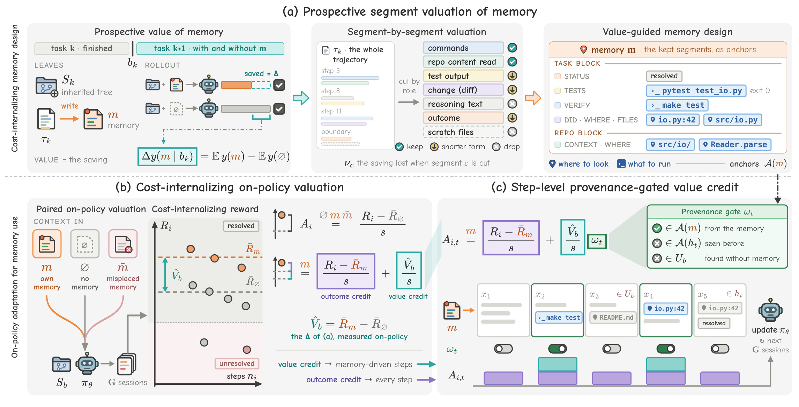
Figure 4的上半部分先把完成任务的轨迹当作候选记忆，在同一继承代码树上比较下一任务有记忆和无记忆的运行；再按轨迹的角色逐类移除，观察少掉某一类信息后损失了多少步数收益，最后将保留下来的内容组织成任务块与仓库块。下半部分不再重新设计模板，而是训练读取记忆的actor：同一边界混合自己的记忆、无记忆和来自其他仓库的错置记忆，通过成功优先的奖励估计当前策略使用正确记忆的收益。右侧将这个收益只附加到可追溯到记忆锚点的步骤，普通结果信用仍给所有步骤。图中两条循环承担不同职责，不能合并成“根据成功案例写一个摘要”的流程；前者确定值得携带的表示，后者改变actor何时采取相应行动。图里错置记忆在格式上仍合理，内容却不适用，这使训练有机会同时惩罚盲从和完全忽视。部署时不需要并行执行图中的训练对照臂，正常actor只读入自己上一任务生成的紧凑记忆并执行工具，因此额外rollout主要属于离线设计和后训练成本，不能从部署token表里推断这部分成本为零。还要注意图中测量对象随阶段改变：片段研究使用冻结actor归纳写入结构，训练阶段则重新估计正在变化的actor对同一记忆池的反应，所以前期得到的价值并没有被当作永久不变标签。价值可能转负，右侧门控仍保留抑制采用的路径，普通结果信用也不会因为某步未使用记忆而被删除。
对任意结果指标，记忆价值定义为同边界上的期望差：
符号解释：$b$固定继承代码状态与下一任务，$m$是上一轨迹产生的记忆，$\varnothing$表示不提供记忆；$y$可以是解决结果、步数或actor token。差值的好坏由指标方向决定：解决率增加为正收益，步数或token增加却是额外开销。估计时取重复运行的均值差，多个候选共用同一无记忆对照臂，减少所需运行次数，但并未消除采样方差。
作者把上一轨迹按角色切成命令、读取的仓库内容、测试输出、最终diff、推理文本、结果和临时文件七类。移除一类以后与完整轨迹比较：
符号解释：$M$为完整轨迹，$M_c$是角色为$c$的全部片段，$s$和$t$分别代表步数与actor token，$\operatorname{med}$为跨边界中位数。$\nu_c>0$表示移除后多走了步骤，因而该类信息值得保留。它测的是其他片段仍在时的条件效应，不能视为所有片段可以独立相加的Shapley贡献。作者对显著性做跨片段多重校正，并进一步比较压缩后组装的记忆与完整历史。
2.2 成功优先的成本奖励与配对在策略估值
固定记忆格式后，actor通过正确记忆、无记忆和错置记忆三种条件共同训练。 每个训练边界执行八个session：四个无记忆、三个携带该边界记忆、一个携带其他仓库真实记忆。记忆池由冻结基准actor写出，避免writer随训练同步变化，导致对照条件漂移。27B每边界三个记忆，9B为十二个。训练组直接给出当前actor使用这些记忆的平均价值，不另做一次昂贵的价值查询。奖励为：
符号解释：$n_i$为步骤，$f_i\in[0,1]$是失败转通过测试的完成比例，$\alpha$控制部分进展，$W$为成功奖励，$n_{\max}$为步数限制。所有成功运行的奖励高于所有失败运行，因此少走几步不能抵消一次解决任务的价值；只有成功内部才扣步骤。27B使用$W=250,n_{\max}=100,\alpha=50$，9B步限二百、部分奖励十六。这个设计减少为了省步数提前放弃的激励，但不等于token成本已逐项进入奖励。
符号解释：两种横线均值分别来自同组正确记忆臂与无记忆臂，$\widehat V_b$为在策略记忆价值，$s$是固定尺度一百，$A_i$为组相对优势。正确记忆臂可拆成结果信用和记忆价值信用；无记忆与错置记忆臂保持普通相对优势。固定尺度避免所有运行都成功时，小步数差被组标准差过度放大，也使不同边界的价值有可比单位。作者并未给错置记忆指定一个人工标签惩罚，惩罚来自它导致的实际结果，故正确忽略无关记忆本身可以获得合理回报。
2.3 来源门控的逐步价值信用
符号解释：$x_t$是一条assistant消息及对应环境输出，$A(\cdot)$提取锚点，$h_t$包含当前任务和此前本轮对话但不含注入记忆，$U_b$为同组无记忆session前八步已经找到的锚点。只有记忆中存在、本轮尚未见过、且无记忆早期对照没有找到的锚点，才把此步记为记忆驱动。该规则不要求知道一个动作最终是否导致成功，避免把来源判定和长期结果因果归因混为一谈；但词法锚点识别、无记忆对照的有限采样和前八步范围都会引入误判。
符号解释：每一步都保留第一项结果信用，只有门控为一的步骤获得第二项记忆信用。若记忆价值为负，使用它的步骤也可能被抑制；不是凡引用记忆就奖励。将门控全部设为一便退回整轨迹优势，无法在步骤之间区分记忆使用。论文的总体期望梯度表达了这种区别：
符号解释：$J_b^{\mathrm{mem}}$是正确记忆下的期望奖励，$V_b$为总体记忆价值，$p_t$是固定历史下触发记忆门控的概率。第二项在记忆有益时推动更多适当使用，在无益时反向推动；若给每步同样价值，期望score为零，该项消失。这个命题依赖固定记忆分布和veto集合，解释理想化梯度方向，不是有限组估计或实际LoRA训练必然改善的保证。
符号解释：$j$为assistant token，$c_i$是该session的记忆条件，$N$为更新中的token归一化数，$\beta=0.2$约束偏离基准actor。式中KL以原文按token汇总归一化的形式示意，9B另按session自身token及session数归一化。LoRA秩与alpha均十六，27B与9B学习率不同，组大小相同；更新有token预算和轨迹截断，超时session会被排除。因此部署结果的解释需要同时核对采样、选择与训练路径，不能只保留一个门控公式。
3. 实验结果
3.1 ChainSWE主结果必须带完整账本阅读
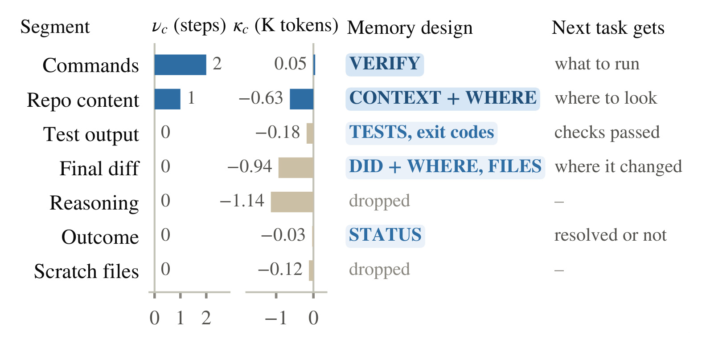
Figure 5中蓝色步数柱集中在命令和仓库内容，移除它们分别使下一任务中位数增加两步和一步；推理文本、diff全文等类别没有相同步数损失，却占用token。右侧于是保留“运行什么”和“到哪里看”的可执行引用，测试输出缩成测试命令与退出码，diff缩成改动摘要、位置和文件列表，结果保留状态，推理叙述和临时文件被丢弃。这里的横向对应关系来自测量，并不意味着所有仓库都应永远删除推理内容；它依赖当前actor、任务链和其他片段仍存在的条件。作者称组装后的记忆以完整轨迹约百分之六的字节保留中位数步数节省，属于该片段研究的经验结论。图中token差异还说明，只删文本可能节省阅读，但若删掉检查命令导致actor重新定位、尝试和验证，行动成本反而增加。适合迁移的是先测各角色在下一任务中的边际作用，再设计格式，而非不加验证地复制图中字段。最终锚点包括文件位置、代码符号、可执行命令和测试标识，必须能被下一任务直接用于工具操作，空泛经验并不自动满足定义。
主实验用ChainSWE一百条真实issue链，按仓库分为五十二条训练链、四十八条测试链，分别九十七和九十六个边界。测试中五十四个是linked边界，即下一标准修复或测试触及的文件与前序标准修复重叠；四十二个不重叠。这个切分用于分析，不是writer输入，也不意味着不重叠任务完全不共享知识。每一行使用相应actor自己的无记忆结果作比较，重复运行次数依模型不同，区间按测试链做配对cluster bootstrap，不能把所有轨迹当相互独立样本。
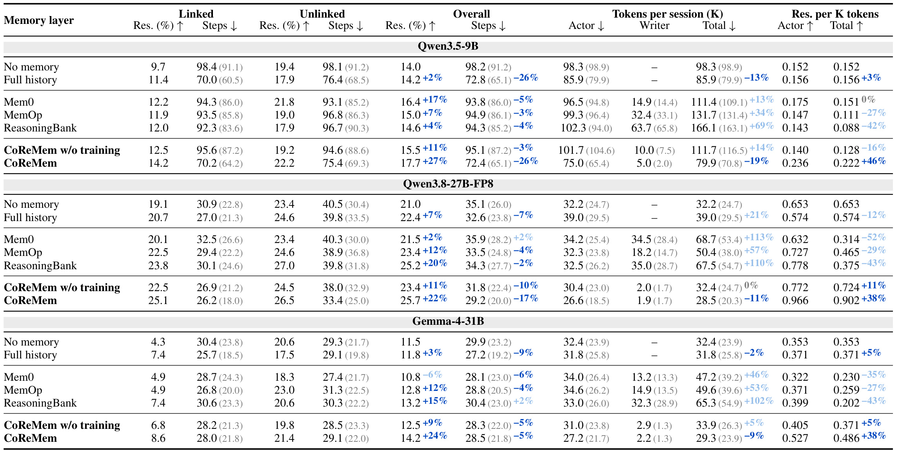
Table 1按三种actor分组，同时列linked、unlinked和总体结果，右侧将actor与writer的缓存感知token相加。27B无记忆解决率为百分之二十一、平均三十五点一步、总token三万二千二百；只换CoReMem记忆而不训练actor，解决率升到百分之二十三点四，步骤降到三十一点八，但加上记忆模块约两千token后，总量三万二千四百，基本没有下降。完整方法达到百分之二十五点七、二十九点二步、二万八千五百总token，较原基准分别增加四点七个百分点、少百分之十七步骤和百分之十一token。九B与Gemma完整方法也提高解决率并减少总token，但冻结九B记忆版本总token反而增加百分之十四。这张表因此不支持“一个短记忆模板就让所有模型同时更准更省”，完整收益包含actor后训练；不同模型对同一种记忆格式的阅读与行动方式不同，writer成本也可能抵消actor侧节省。表中相对标签以每组无记忆行为分母，百分之二十二的解决率相对提升不能写成二十二个百分点，缓存感知token也不能与后面的原始token直接横比。表中writer调用还揭示了另一层归因：冻结版本由冻结actor写记忆，完整版本由后训练actor自己写记忆，两者遵循相同格式，却并非锁定为完全相同的字符串。完整系统因而同时包含更会行动的读者和可能改变输出的写者，若要证明纯读取训练的独立贡献，还需冻结同一组记忆文本另做交叉评测。各组actor上下文和步限也不同，九B原基准接近一百步，百分之二十六的步数相对降幅与27B的百分之十七不在同一绝对预算上；实际选型应看每组绝对成功和成本，再对照资源约束，不能只挑最大的相对改善。
对27B，完整方法比冻结actor的相同记忆版本再少约百分之八步骤；但其中也有一般编码能力提升。要区分记忆贡献，作者另在每个训练变体内部比较有记忆和无记忆，而不是把完整方法与未训练无记忆的全部差值都叫作记忆收益。正文报告平均resolve/总token约提升百分之四十一，是三种开放actor比率变化的平均，不是合并全部任务后推导的统一成功概率，也不是墙钟吞吐增加百分之四十一。论文没有实测延迟、能耗或云账单，不能将token效率直接换成这些指标。
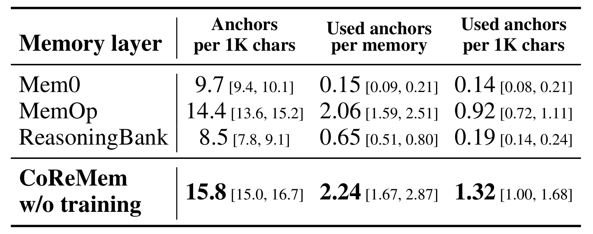
Table 2展示冻结27B在测试集上的锚点指标。CoReMem每千字符包含约十五点八个锚点，每份记忆后续实际使用二点二四个，折合每千字符一点三二个；MemOp相应为十四点四、二点零六和零点九二，其他两种更低。三列回答不同问题：密度是文本里可识别引用有多少，使用量是后续session到底触及多少，单位字符使用量衡量阅读负担下的可操作性。区间来自测试链，不能因为两个均值有差就自行宣称每对差异都显著。使用定义要求锚点只出现在记忆并随后出现在下一任务消息，仍不能证明每次使用都是成功原因；actor可能调用了不相关检查，也可能仅提到符号。表支持“紧凑记忆提供了更多可被执行的定位与验证线索”，同时提醒应把实际采用与最终任务收益联合评估。它也不支持无限增加锚点数量，重复路径和过时测试命令可能增加干扰，论文尚未测长期积累后的这种风险。
3.2 API actor和记忆模块的成本边界
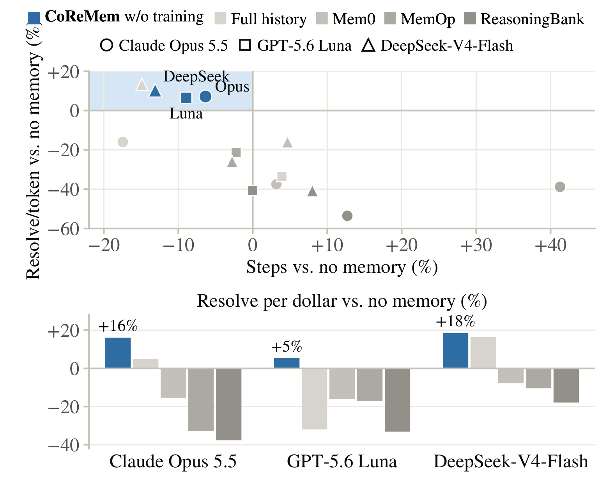
Figure 6上图把每种记忆在不同API actor上的步骤变化放在横轴，单位总token的解决结果变化放在纵轴，左上区域代表两者同时改善。蓝色CoReMem冻结版本在三种API actor上都位于该区域，其他形式有的更费步骤，有的虽然省步骤却因输入历史或writer调用降低token效率。下图按作者采用的服务商列表价，把同一调用账本换算成每美元解决结果，CoReMem对应约百分之十六、百分之五和百分之十八改善。这个结果首先证明要计算记忆模块，而不是只看actor；其次它是指定API价格假设的换算，不是作者真的购买同样服务后测得的总开销。DeepSeek使用非高峰费率，缓存命中折扣也进入计费方式，模型之间的价格不同不能当作结构效率差异。图中步骤与token效率有时方向不同，正好说明“少行动”并不自动代表“少生成”或“更快响应”。将它迁移到本地部署，需要再核对缓存、批处理与工具等待，而不能直接使用下方百分比做预算承诺。
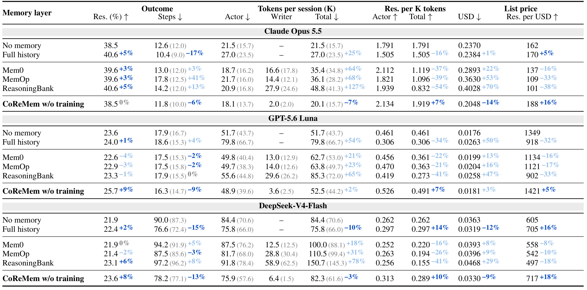
Table 3给出散点背后的全部读数，冻结CoReMem使Opus总token从两万一千五百降到两万零一百，解决率保持百分之三十八点五；Luna的解决率从百分之二十三点六到百分之二十五点七，actor token减少，但加writer后的总量为五万二千五百，略高于无记忆五万一千七百；DeepSeek总token从八万四千四百到八万二千三百，解决率从百分之二十一点九到百分之二十三点六。这里应直接按各行Actor加Writer读Total，不能把某个记忆调用规模或差值误当总量。这些比率使用的是全会话平均结果，没有保证每一个任务都获得同样的节省，实际部署还应查看成本分布而非仅平均数。Luna就是特别有用的反例：每美元效率可以提高，同时单session总token也可能增加。Opus只有一次replay，其他API模型重复次数也不相同，证据强度不能一视同仁。对通用记忆系统而言，表中事实支持“有些原本看起来有帮助的记忆形式，其读写花费超过节省”，而不支持所有基线本身无效；部分基线提升了成功率，只是在本设定的单位成本上不划算。
3.3 成本奖励和来源信用分别贡献什么
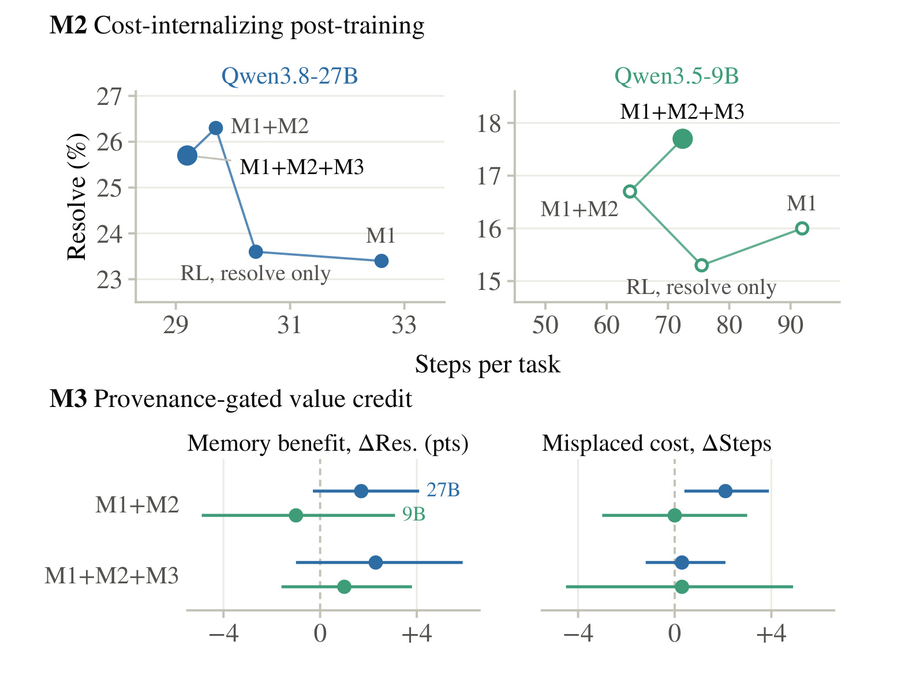
Figure 7上排比较冻结记忆M1、只按解决结果训练、加入成功内扣步数的M2，以及再加来源信用的完整方法。27B加入M2后在更少步骤下获得更高解决率，完整方法又向左移动；九B则不是每加模块都继续省步，M1加M2约六十三点八步，而完整方法回到七十二点四步，同时解决率提高。下排显示同actor有记忆对无记忆的配对解决率收益，以及错置其他仓库记忆带来的额外步骤。27B未加来源信用时错置记忆多二点一步，加入后约多零点三步，后者区间跨零；正确记忆带来的解决率增量由一点七到二点三个百分点。图支持模块改变了利用与拒绝记忆的取舍，但不能把门控称为无损加速器。不同变体有的replay在后续窗口运行，作者对9B也说明错置臂和resolve-only臂并非全部同窗；应保留这种实验时间条件，不能将所有点解读为完全同步的随机试验。更稳妥的结论是，在该协议中定向信用改善记忆相关行为，最终成本与成功率仍要联合选择。
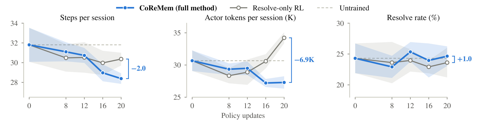
Figure 8固定27B训练步数、学习率、组形状与记忆池，并在同一测试窗口读八、十二、十六和二十次更新的checkpoint。三幅图分别是步骤、actor token和解决率，蓝线为完整方法，灰线为resolve-only，带状区域是三次replay的标准差。最终完整方法比resolve-only少约两步、六千九百actor token，并多一点解决率；但附录给出的配对区间显示，步数差的区间从负四点一到正零点四，解决率差从负二点四到正四点五，都跨零，token差则没有跨零。不能仅看蓝线较低就宣称三项差异都已显著。图的价值在于训练后段两条路线的代价走势不同：只奖解决率可能让输出重新膨胀，而成本目标继续压缩消耗。这种较宽区间与有限测试链和采样变异有关，不能以均值差的方向代替区间对证据强度的限制。论文也提醒不同奖励的训练曲线不能直接比reward高低，所以改用共同的外部指标衡量。选择checkpoint依训练集预先规则，而不是挑测试集最好的一点；这对复现收益比单独对齐更新次数更重要。
3.4 独立单任务泛化与外部协议限制
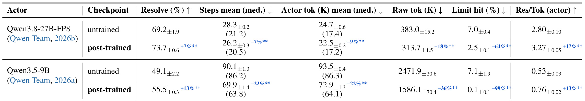
Table 4在全部五百个SWE-bench Verified实例上测试，没有上一任务，自然也不注入记忆，三次replay比较零更新adapter与后训练adapter。27B解决率从百分之六十九点二到百分之七十三点七，增加四点五个百分点；九B从百分之四十九点一到百分之五十五点五，增加六点四个百分点，同时步骤和actor token下降。原始token与缓存感知token分别列出，不能将右侧几百万量级raw计数和主表相加。相同LoRA服务路径是控制条件，避免推理实现差异被算作训练收益；解决结果按session结束时工作树测试，若只测提交patch则27B绝对值略变。对该表还需保持评测对象一致：相同任务集和终止状态测试才支持训练前后差异，跨表的不同成功率不能直接串联。这个泛化结果一方面说明成本后训练可能改进一般编码行为，另一方面正限制主结果的归因：完整系统相比未训练基线的全部提升不能都归到记忆模板。作者还披露一例Verified任务出现在ChainSWE测试链、没有出现在训练链，不能把两个评测集简单当完全独立样本合并。
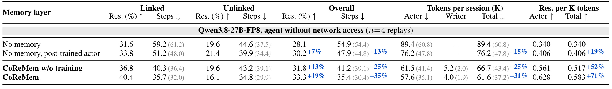
Table 5列出外部分布下四种条件，冻结记忆、仅actor后训练以及组合方法都与无记忆比较。表中总体解决率从百分之二十八点一到冻结记忆百分之三十一点八，组合方法百分之三十三点三，总token也下降，说明当前配置下可观察到有益变化。可是caption明确说下一任务从独立checkout开始，只有记忆越过边界，而且作者在看到首轮记忆过长被截断后调整writer指令，加入“不假设此前改动存在”和精简字段等约束；附录正文却把SWEContextBench描述为继承代码树，两处协议文字冲突。本文保留这个未解决的不一致，不把该表当成对严格继承状态设定的独立泛化证明，也不把看过初轮后更新的指令称为完全预注册测试。外部数据结果仍有参考价值，但应先获取脚本、具体checkout与指令版本，才能确定测量对象。表格的数据集说明、网络访问条件和四次replay均属于证据范围，不能只摘最后一行降幅而省略这些限制。
3.5 更换harness后，质量提升不再意味着少花资源
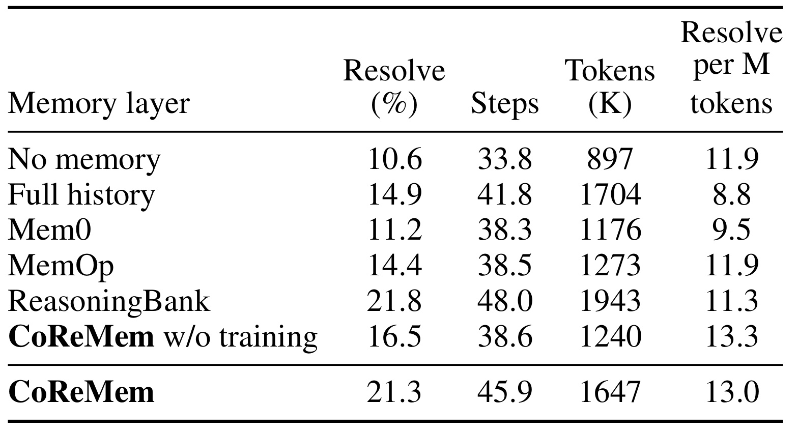
Table 6将相同27B与记忆切换到OpenHands，在九十六个下一任务中的九十四个上执行两次运行，token采用无缓存折扣的原始计数，与主表不可比。无记忆解决率百分之十点六、三十三点八步、约八十九万七千token；冻结CoReMem提高到百分之十六点五，却需要三十八点六步和一百二十四万token；完整方法达到百分之二十一点三、四十五点九步、一百六十四万七千token。每百万token解决结果由十一点九到十三点三或十三点零，是效率比值改善，但绝对步骤和总token均增加。这个结果是论文内部十分重要的边界：方法可以在另一个harness上换来更多成功，而无法保证同样的少步骤行为；完整后训练的比值还略低于冻结记忆版本。ReasoningBank在这里解决率百分之二十一点八高于完整方法百分之二十一点三，但消耗也更高，因此不能写CoReMem所有指标全胜。对工程评估而言，应先决定优先控制单请求预算、成功率还是单位token成功量，再选运行条件，不能在结果出来后任意切换最有利的指标来宣传。
主文最有力的证据集中在ChainSWE的配对状态控制与完整调用账本，而不是所有扩展条件都重复同一结论。作者明确没有墙钟时间或能耗结果，也没有分析很长任务历史下记忆累积与刷新。匿名代码入口本轮不可访问，因此无法独立核实训练过滤、token缓存折算、锚点解析以及外部表格的协议冲突。本文保留这些限制，并未通过运行代码、训练actor或检查生产服务来复现任何结果。
4. 总结
4.1 这篇工作真正提供了什么
CoReMem最值得借鉴的是将记忆看作对下一任务的一次有成本干预。位置与检查命令之所以进入模板，是因为在固定继承状态下移除这些角色会让下一任务增加探索，而不是因为它们看起来像一份漂亮总结。这个思路把写入目标、读取行为和最终任务结果连接起来，也为长期协作中的记忆评估提供了更具体的实验单位。它不需要假定记忆越丰富越好，更不把压缩本身当价值，而是检查压缩后留下的线索是否能减少后续工作。
第二个贡献是把actor适配纳入方案。只改变记忆内容，actor可能仍按从头解题的习惯重新搜索，甚至盲从不适用材料。作者在训练组内测正确记忆相对无记忆的价值，把这部分信用给可追溯采用它的步骤，同时保留全步骤的结果信用。这比给任何引用记忆的动作固定奖励更有依据。不过来源门控依然是代理指标，固定前八步对照和词法锚点不能完整表示因果价值。实际应用应把它作为可检查的训练信号，而非一个天然正确的自动评委。
4.2 工程迁移需要固定哪些条件
若要检验相似思路，第一步应保存每个任务边界的代码状态与实际轨迹，带记忆和无记忆从同一快照运行，writer不读取未来issue或隐藏测试。第二步分别维护记忆构建和actor训练对照，把冻结actor的记忆收益、训练后actor的一般能力提升、训练后对记忆的额外收益分开。第三步统一token账本，将writer、检索、注入和actor都计入，同时单列墙钟、缓存命中和工具等待，避免以步骤替代实际成本。位置锚点还应与文件版本关联，测试命令也要检查依赖和运行环境；指向过时代码的短记忆可能比冗长历史更容易误导。
长时维护还需要解决论文未覆盖的淘汰与更新。前一任务的有效检查可能在后续重构后失效，文件路径和函数符号可能移动，失败任务的错误推断也可能被反复传播。因此可把锚点视为带来源和时效的候选证据，读取后通过当前代码与可执行检查验证，再决定是否采纳。这里是本文基于协议提出的工程判断，论文没有证明加入版本化或验证策略后会取得同样降幅，不能提前当作实验结论。
4.3 局限和后续跟进
第一，主实验以Python仓库和mini-swe-agent为主，其他语言、不同工具接口和更大actor尚缺同等证据；OpenHands的成本反例已经说明harness影响显著。第二，完整方法包含后训练与部署记忆，成功率和token改善不能全部归因于记忆文本。第三，来源门控可能错把词法重合当记忆使用，也可能漏掉改写后使用的线索；无记忆少量rollout并不能穷尽自然探索路径。第四，步骤与缓存感知token没有覆盖延迟、能耗、离线配对估值和训练费用，回本条件仍需补算。第五，外部数据的checkout描述冲突和看过首轮后的指令调整，降低其作为严格泛化证据的解释力。第六，长期多任务记忆增长、失效和错误传播仍是开放问题。
后续应优先取得匿名代码可访问版本，核对状态恢复、锚点解析和token折算，解决Table5协议冲突；然后在固定writer与actor的双因素实验中重跑配对边界，观察不同任务类型及linked程度下的收益；最后扩展到更长链与实际工具等待条件，记录成功率、绝对预算和单位成本三条曲线。只有这些条件同时透明，才能判断一个未来任务的收益是否足以支付记忆在前面写下、随后读取和不断维护的费用。